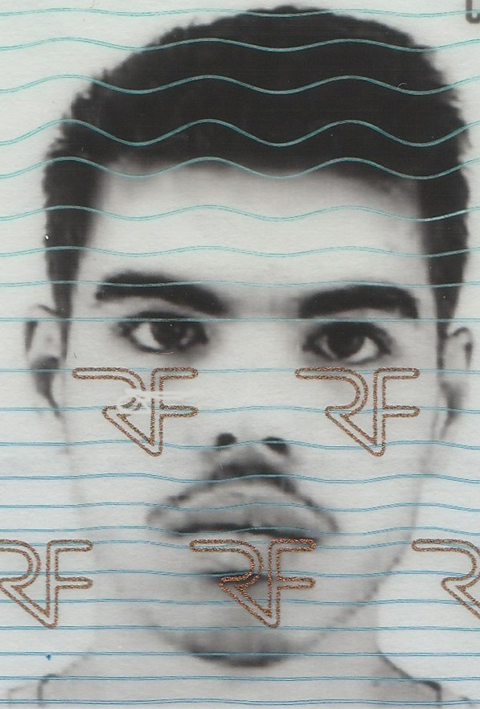

Bienvenue sur ma page personnelle
⮴ Cliquez sur le bouton en haut à gauche pour ouvrir la barre de navigation
Bienvenue sur ma page personnelle
⮴ Cliquez sur le bouton en haut à gauche pour ouvrir la barre de navigation
Welcome to my personal page
⮴ Click the button at the top left to open the navigation bar

* * *
Bonjour, je m'appelle Charriere Clément
Actuellement en dernière année d'école d'ingénieur au sein du réseau Polytech Grenoble,
je me spécialise en Informatique et Électronique des Systèmes Embarqués (IESE).
Ce parcours m'a permis de développer des compétences approfondies en programmation backend (C, C++),
en électronique et microélectrique, ainsi qu'en traitement du signal,
avec une forte orientation vers les systèmes embarqués, un domaine qui me passionne.
Avant d'intégrer Polytech en 2022, j'ai obtenu un BAC+2 en Génie Électrique et Informatique Industrielle (GEII) à l'IUT de Grenoble.
Cette formation m'a permis d'acquérir une base solide en électricité, électronique, et automatisation,
et d'approfondir mes connaissances en développement de systèmes industriels.
Au-delà de mon parcours académique, mes stages et expériences professionnelles (notamment lors de mes emplois d'été) m'ont permis
d'acquérir une expérience concrète dans des secteurs variés, en particulier en électronique et informatique embarquée.
J'ai eu l'opportunité de travailler sur des projets intégrant la conception de systèmes électroniques et la programmation de solutions embarquées,
ce qui m'a permis de renforcer mes compétences techniques et de développer des capacités en gestion de projet et en travail en équipe.
Aujourd'hui, je suis à la recherche d'un stage de fin d'études (de 22 semaines à partir du 15 Mars 2025) pour valider mon diplôme et mettre en application mes compétences dans un environnement stimulant, avec un intérêt particulier pour les projets liés aux systèmes embarqués, à l'informatique, à l'automatisation ou à l'IoT.
* * *
Hello my name is Charriere Clément
I am currently in my final year of engineering school at Polytech Grenoble,
specializing in Embedded Systems Engineering (IESE).
This program has allowed me to develop strong skills in programming (C, C++),
electronics, as well as networking and signal processing,
with a particular focus on embedded systems, a field I am passionate about.
Before joining Polytech in 2022, I earned a two-year degree in Electrical
Engineering and Industrial Computing (GEII) from the Grenoble University
Institute of Technology (IUT). This education provided me with a solid
foundation in electrical engineering, electronics, and automation,
and deepened my knowledge in the development of industrial systems.
Beyond my academic path, my internships and professional experiences
(notably during summer jobs) have allowed me to gain hands-on experience
in various sectors, especially in electronics and embedded computing.
I had the opportunity to work on projects involving the design of electronic
systems and the programming of embedded solutions, which helped strengthen my
technical skills and develop project management and teamwork abilities.
I am currently looking for a final year internship (22 weeks starting March 15, 2025) to finish my degree and apply my skills in a challenging environment, with a particular interest in projects related to embedded systems, IT, automation or IoT.
Ici, tu peut visualiser mon CV.
| Année | Filière | École |
| 2022-2024 | 4ème année, Informatique et Electronique des Systèmes Embarqués | PolyTech, Université Grenoble Alpes (UGA) |
| 2020-2022 | Génie Électrique et d'Informatique Industriel | IUT1 UGA |
| 2020 | Baccalauréat série S SVT | Lycée Les Eaux Claires de Grenoble |
Période : 17 semaines (mi avril à fin août 2024)
Période : 12 semaines (fin mars à fin mai 2022)
Période : job d'été 2 mois et une semaine (fin juin à fin août 2021)
Période : job d'été 3 mois (début juin à fin août 2022)
Période : job d'été 3 mois (début juin à fin août 2023)
Période : job d'été 2 mois et une semaine (fin juin à fin août 2020)
Voici mes projets hardware, firmware et software.
Here are my hardware, firmware and software projects.
Programmation d'un système universel de mesures des figures de mérites d'un capteur sur Red Pitaya STEMlab 125-14.
Le programme compilé à même la Red Pitaya permet de déterminer graphiquement la fréquence de résonnance et d'anti-résonnance du dispositif.
L'application démodule le signal de sortie du dispositif et le signal de référence d'exitation généré par la Red Pitaya et comprare les résultats
pour en déduire l'amplitude et la phase. Cette étape est répétée pour différentes fréquences d'exitation sur une plage de fréquences paramétrable.
Le programme est écrit en C et C++ et utilise la bibliothèque de la Red Pitaya pour gérer ses périphériques et principalement les deux entrées et
les deux sorties analogiques hautes perfomances (125MHz et 14 bits de réslution sur une pleine échelle de ±1V).

Red Pitaya STEMlab 125-14